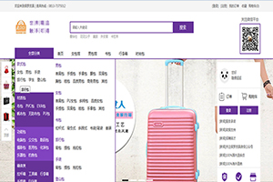

JavaScript
-
- Basic info. 基本信息
- 个人信息: 吉方玉 / 女 / 24岁
- 教育经历: 本科 / 河南财经政法大学
- 英语水平: CET-4
- GitHub: www.github.com/xiayuyingyun
-
- Study. 学习经历
河南财经政法大学（2012.9 - 2016.7）
-
获奖经历
2016年获得校二等奖学金、优秀学生干部，优秀毕业生称号
2015年获得校二等奖学金、三好学生、国家励志奖学金
2013，2014年均获得校一等奖学金、三好学生称号
-
其他证书
机动车驾驶证
会计从业资格证
初级会计职称
普通话等级证
-
在校期间职务
2014年9月-2016年7月担任班级学习委员
2012年9月-2014年7月担任班级团支书
- Experience. 项目与工作经验
河南及时雨电子商务有限公司（2016.4 - 2016.9）
-
协同公司同事制作标准优化的前端代码，并增加一些交互动态功能，致力于通过技术改善用户体验。使
用 AngularJS 框架 , 来实现前端组件及数据交互
郑州迅科电子科技有限公司（2015.10 - 2016.2）
-
互联网电商行业的网站开发，同时结合后台开发技术模拟整体效果，进行丰富互联网的Web开发，以及
协同公司同事完成外包项目。使用 AngularJS 框架 , 来实现前端组件及数据交互
个人项目
-
简单的数字闹钟 源代码 Demo数字闹钟上显示有星期和当前时间，有两个对话框 ： 一个是用来设置/编辑闹铃的，而另一个是来显示闹铃时间已到的。
-
个人酷炫简历 源代码 Demo
用Bootstrap+JavaScript+css做的一个酷炫简历

-
保罗皮具 源代码 Demo
用css+html+jQuery实现的一个简单的箱包商城
 -
个人静态简历 源代码 Demo
设计优雅、内容完善的静态简历页面，可以用浏览器直接生成合适尺寸的PDF，使用 Gulp 改进工作流，GitHub 上 Star 133 Fork 33

-
四川旅游 源代码 Demo
用Bootstrap+JavaScript+css做的一个界面清晰的响应式布局 ，可用于移动端的页面。

-
编发馆 源代码 Demo
用css+html+jQuery实现的一个简单的编发馆
-
- Skill. 技能清单
Web前端
-
HTML / CSS
精通html5 + css3的新功能，具有WEB 前端开发经验, 掌握HTML,CSS,HTML5,CSS3,DOM JSON, AJAX等技术；
熟悉 Less / Sass 等CSS预处理和后处理方法、工具
对用户体验、交互操作流程及用户需求有深入理解、精通 DIV+CSS 网页布局，符合 W3C 标准
-
JavaScript
熟悉JavaScript/Ajax/DOM/Prototype
能运用模块化、面向对象的方式编程
深入了解Bootstrap、Anglarjs、jQuery等前端框架,会使用Nodejs
-
其他
有美工基础，会使用photoshop
了解前端安全、性能优化方面的一些知识
后端
-
环境
熟悉 Linux 开发环境、 Linux 服务器环境搭建部署，两年 Linux 日常使用经验
-
语言
了解 PHP，能够实现简单的爬虫、数据及图像处理工具、自动化脚本
熟悉 Java，能进行简单的网络编程和多线程编程
了解 C，能编写简单的解释器
数据库
-
会使用SQL Server,oracle, mysql等数据库等
自我评价
-
有责任，工作踏实，性格开朗乐观，积极上进。
易和人相处，拥有良好的亲和力。
喜欢js，非常热爱编程，喜欢钻研新的技术，
具有很强的自学能力和良好的学习方法， 喜欢研究各种新的框架。
能够熟练使用 Markdown 进行写作